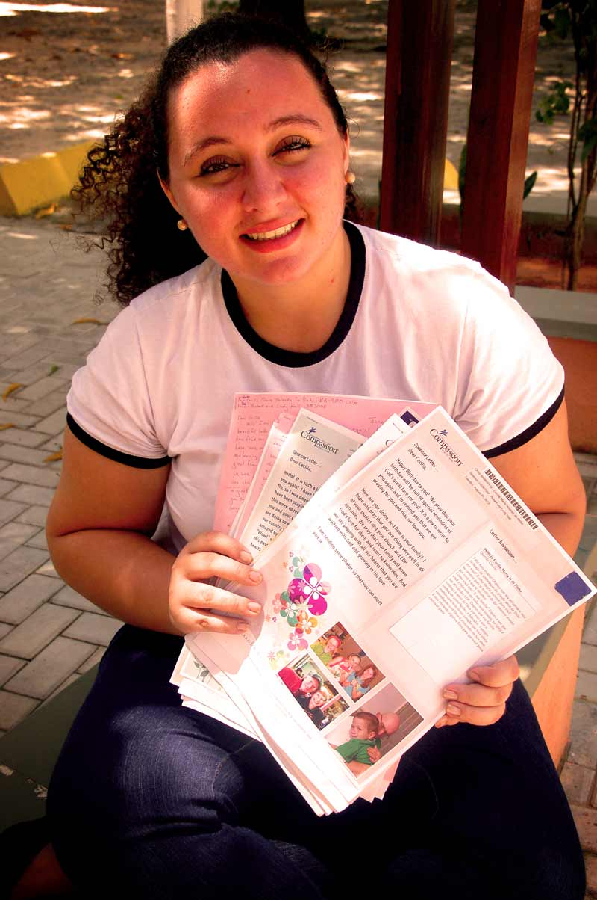

Love Letters
In financial year 2014, Australian sponsors sent over 162,000 letters to sponsored children around the world. Three very different people—a 70-year-old translator from Thailand, a young boy from Honduras, and a university student from Brazil—describe the impact that sponsors' letters have had on their life.
The translator
“I see myself as a matchmaker who helps sponsors and children love each other”
At 70 years old, Chuwit Wutthikarn would be forgiven for putting his feet up to watch the world go by. Instead, since retiring five years ago from his position as vice dean at a Thailand university, Chuwit has been translating the letters children write to their sponsors.
“I write every letter by hand because I think handwriting is more valuable and it creates a human touch between sponsors and children,” says Chuwit.
“Translating for me is not just translations. I see myself as a matchmaker who will help sponsors and children love each other.”
The translation process can be time consuming, with each one-to- two -page letter taking at least 30 minutes to translate to English. Chuwit can spend hours searching for the right way to describe difficult words like medical definitions or phrases describing cultural traditions. He even makes phone calls to Compassion’s field specialists for advice to ensure that sponsors in other countries will understand the meaning and feeling their sponsored child was communicating.
Chuwit is one of 40 translators who translate around 2500 children’s letters from Thai to English each week; another 20 translators work to translate the 1000 sponsors’ letters Thailand receives each week from English to Thai.
For Chuwit, translating letters is a labour of love.
“The happiness I feel from translating letters, money cannot buy.”
The sponsored child
“I said to name my baby sister Amy, just like my sponsor”

Rodguin’s sponsor, Amy, may live in Canada but she’s spoken about so often you’d be forgiven for thinking she lived next door. For the last six years, Amy’s letters to Rodguin have been a source of friendship and encouragement for the 11- year- old. To Rodguin, his sponsor is a part of the family—and in a way, she is. When his mum asked him what she should name his new baby sister, Rodguin didn’t hesitate. “I said to name her Amy, just like my sponsor, so my sister was named after her,” says Rodguin.
When Rodguin first began attending his Compassion centre in Honduras, staff said the five year old was carrying the weight of the world on his shoulders. His father was physically abusive and later separated from his mum, actions which left Rodguin feeling sad and angry. After lots of counselling and prayer from staff members, Rodguin has learned to focus on the good things in his life. One of these things is his relationship with his sponsor, Amy. His face lights up when he talks about her.
“Rodguin loves his sponsor and loves to get her letters,” says Harly Diaz, Rodguin’s teacher. “He has found a special friend in Amy. Her letters have been a great source of encouragement, love, support and solidarity.”
The student
“Listening to a person I have never seen say she loves me gives me strength to continue”
Cecilia unfolded the letter carefully and eagerly began to read her sponsor’s handwritten words. The news was nothing out of the ordinary—the arrival of winter, a son’s wedding, the assurance of prayer—but Cecilia soon found herself blinking the tears out of her eyes.
“I was thinking about my sponsor sitting at a table, looking through the window. Suddenly, she remembered me,” explains Cecilia. “She took a piece of paper and she wrote to let me know she had remembered me. It is so strong, you know? This kind of love creates in us the desire to tell others they are important, too.”
For student Cecilia, sponsored since she was four and now 21 years old, the knowledge that someone on the other side of the world is cheering her on is a great source of encouragement, particularly as Cecilia’s path to her dream university was difficult.
Despite the odds stacked against her, Cecilia’s hard work and dedication paid off. When the list of approved university students was released, Cecilia’s name was on it. Her sponsor’s support helps Cecilia to deal with the pressures of student life.
“If it was not for Compassion and the letters from my sponsor, I may have had to quit college,” says Cecilia. "But my sponsor encourages me. She says she has been praying for me and my family. Listening to a person I have never seen say she loves me gives me more strength to fight to continue.”
Words by Arada Polawat and Elissa Webster, Yuri Fortin,
Ana Rafaela Oliveira and Zoe Noakes
Photos by Arada Polawat, Yuri Fortin and Ana Rafaela